Enunciado ejercicios Git y GitHub I y II
Repositorio DEAW
Lo primero es crear el repositorio público en Github con el nombre de DEAW.
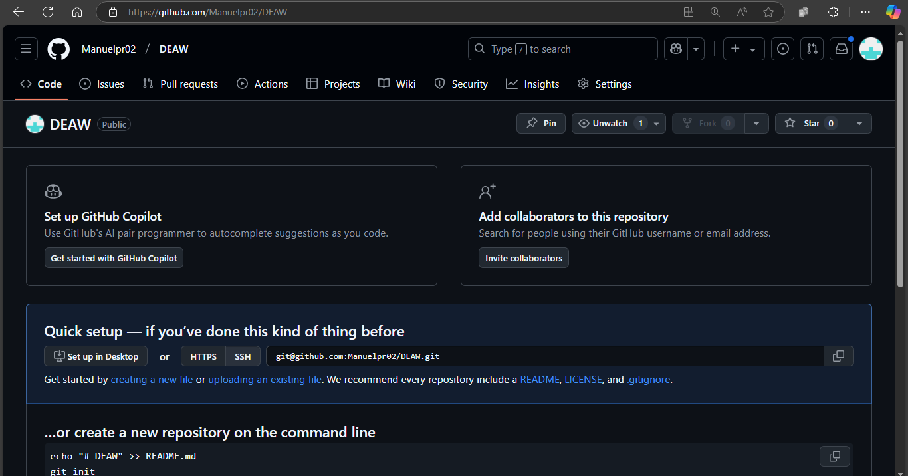
Se clona dentro de una carpeta.
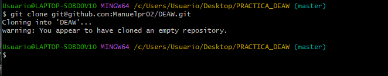
README
Se crea un README.md con contenido.
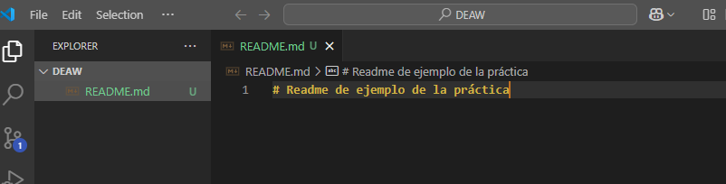
Commit inicial
Se crea el commit para la subida.
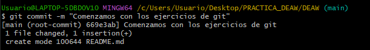
Push inicial
Se sube al repositorio con git push y se comprueba como se ha subido.
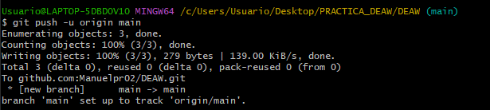
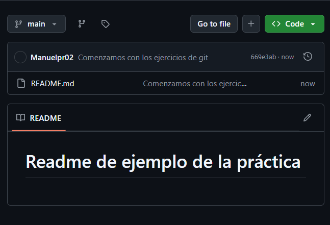
Ignorar archivos
Se crea un fichero privado.txt y una carpeta llamada privada y se añade dentro del .gitignore para que lo ignore.
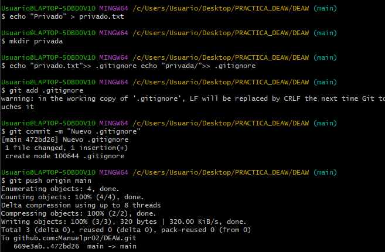
Se sube y se comprueba que no se hayan subido el fichero y la carpeta.
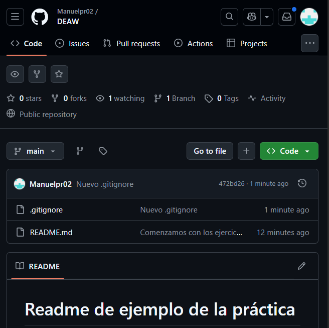
Añadir fichero 1.txt
Se crea un fichero 1.txt y se añade con git add.
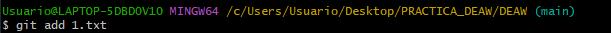
Crear el tag v0.1
Se crea un tag con git tag y se añade.
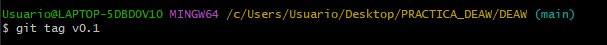
Subir el tag v0.1
Se sube con git push el tag.
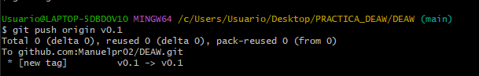
Cuenta de GitHub
Se cambia la foto de perfil dentro del propio Github y se añade la doble autentificación.
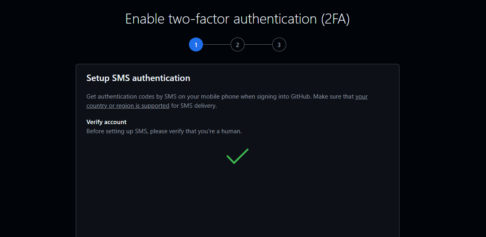
Crear una tabla
Se modifica el Readme añadiendo nuevos usuarios y su correo y se sube.
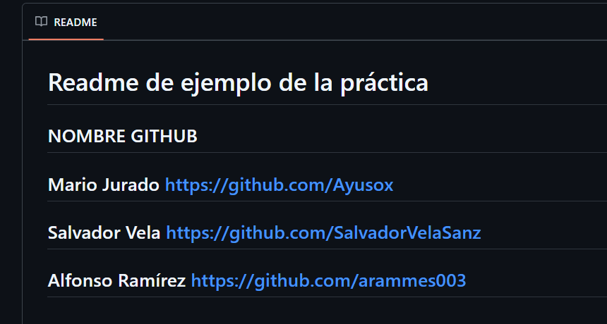
Colaboradores
Se invita como colaborador a un usuario dentro de Github.
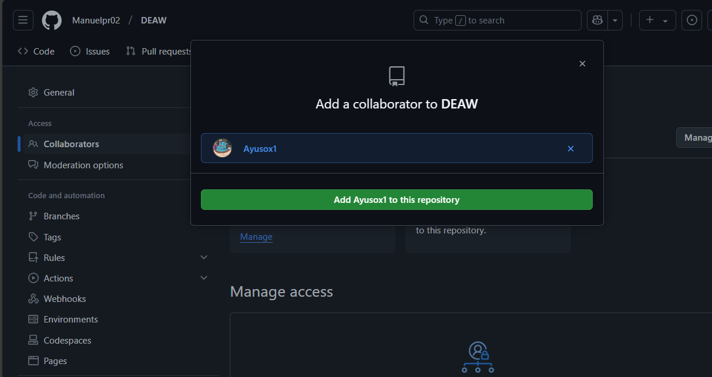
Crear una rama v0.2
Se crea una rama con git branch.
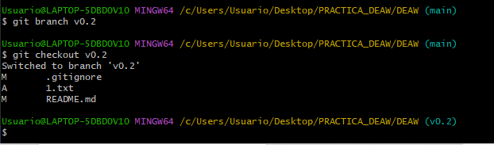
Añadir fichero 2.txt
Se crea un fichero 2.txt y se sube al repositorio y se comprueba su subida.
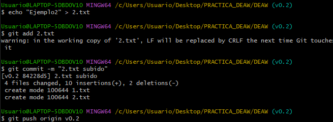
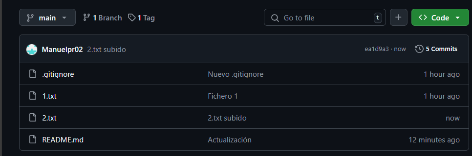
Merge directo
Se cambia a la rama main y se hace un merge llamado v0.2 .
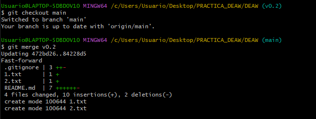
Merge con conflicto
Se modifica los ficheros creados antes poniendo hola y adiós y se suben y se fusionan las ramas.
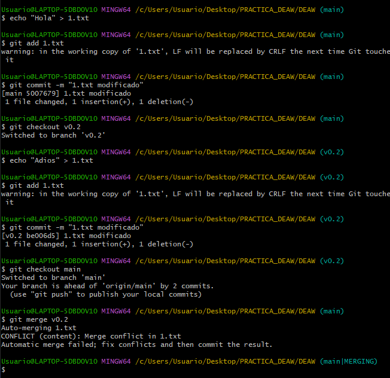
Listado de ramas
Se muestra las ramas con git branch.
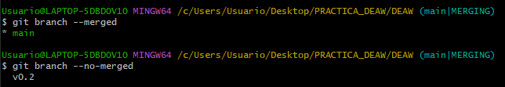
Arreglar conflicto
Se modifica el fichero y se añade solucionando el conflicto.
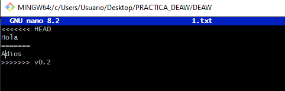
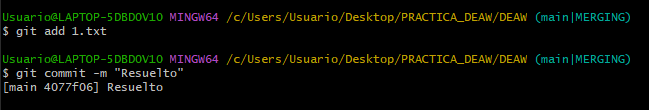
Borrar rama
Ahora se crea el tag v0.2 y se sube.
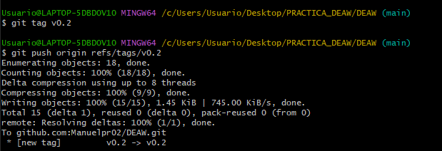
Y luego se elimina la rama v0.2.
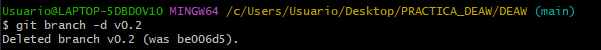
Listado de cambios
Se muestran todos los cambios con git log --oneline --decorate -graph -all.
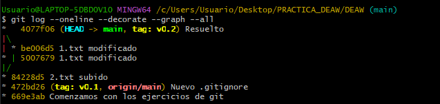
Ejercicios de creación y actualización de repositorios
Ejercicio 1
Se configura Git aladiendo usuario, el correo y activando el color de salida.
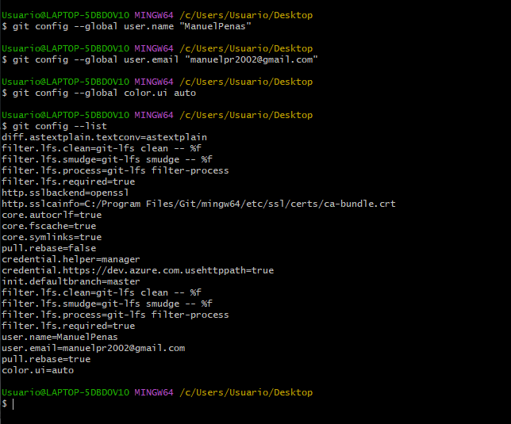
Ejercicio 2
Se crea el repositorio libro y se muestra el contenido.
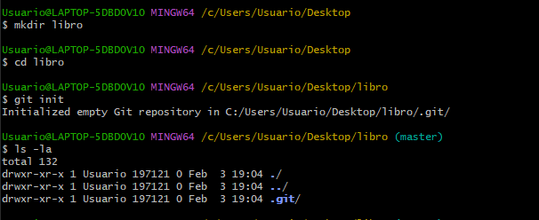
Ejercicio 3
Se crea indice.txt con la información de la imagen y se sube a la zona de intercambio temporal.
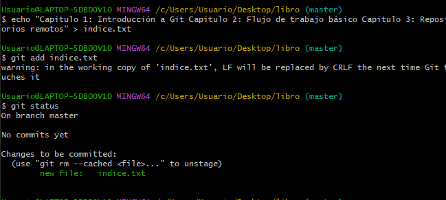
Ejercicio 4
Se realiza el commit de la imagen y se sube.
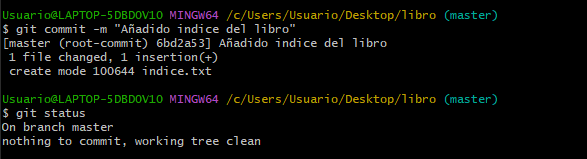
Ejercicio 5
Se modifica el fichero de antes con la nueva información y se muestran las diferencias con la versión anterior. Luego se hace el commit.

Ejercicio 6
Se muestra los cambios con la versión anterior, se modifica el mensaje del commit y se vuelven a mostrar los cambios.
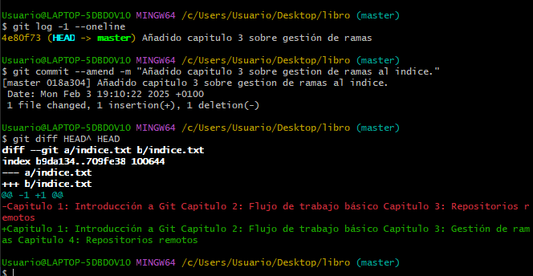
Ejercicios de manejo del historial de cambios
Ejercicio 1
Se muestra el historial de cambios, se crea la carpeta capitulos y dentro el fichero capitulo1.txt con la información de la imagen de debajo. Finalmente se hace el commit y se muestra el historial.
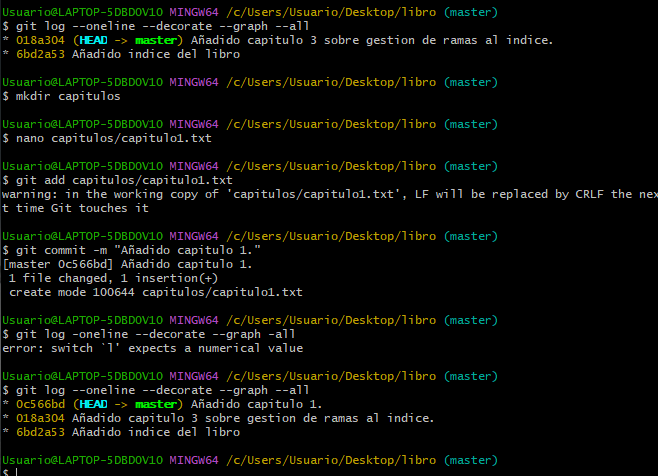
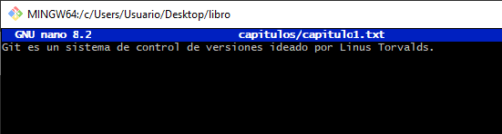
Ejercicio 2
Se crea el fichero capitulo2.txt con la información de debajo, se sube, se crea el commit y se muestra la diferencia entre esta versión y dos anteriores.
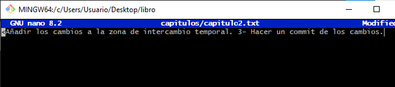
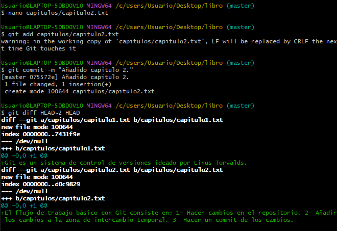
Ejercicio 3
Se crea el fichero capitulo3.txt con la información de debajo se sube sube, se hace el commit y se muestra la diferencia entre la primera y última versión.
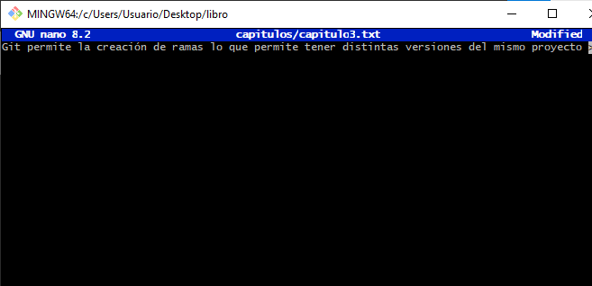
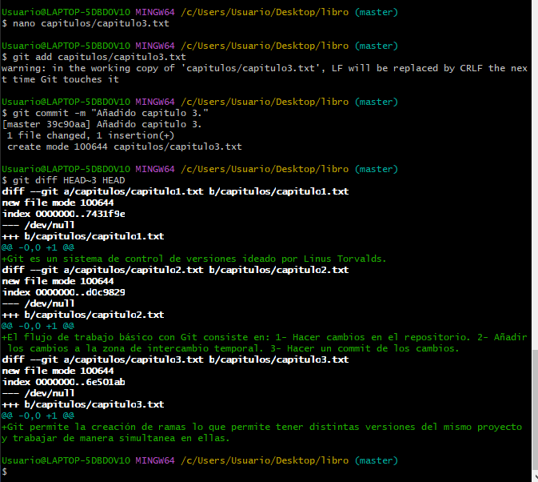
Ejercicio 4
Se modifica indice.txt añadiendo la nueva línea, se crea el commit y se comprueba quien lo ha modificado con git blame.
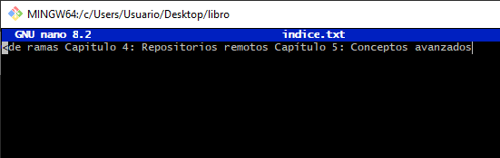
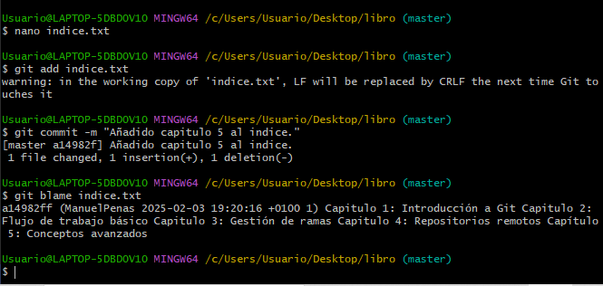
Ejercicios de deshacer cambios
Ejercicio 1
Se elimina la última linea de indice.txt se comprueba el estado y se vuelve a la versión anterior con git restore.
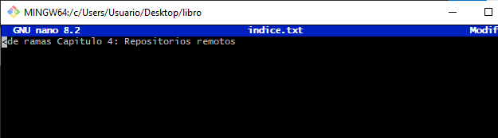
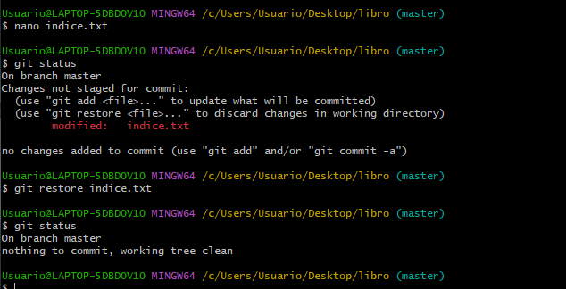
Ejercicio 2
Se elimina la última línea de indice.txt, se sube, se comprueba el estado del repositorio, se quitan los cambios de la zona de intercambio temporal, se comprueba el estado y se vuelve a la versión original.
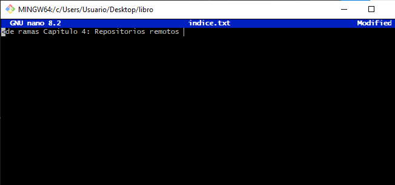
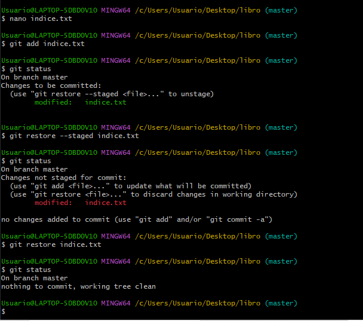
Ejercicio 3
Se elimina la última linea de indice.txt, se guarda, se elimina el fichero capitulo3.txt, se añade uno nuevo llamado capitulo4.txt y se sube, se comprueba estado y se vuelve a la versión original.
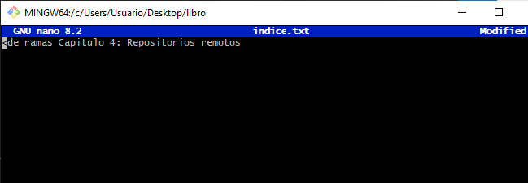
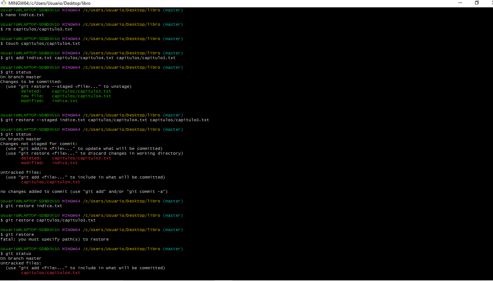
Ejercicio 4
Se elimina la última línea de indice.txt, se elimina el fichero capitulo3.txt y se sube con el commit de la imagen, se comprueba el estado y se deshacen los cambios y se vuelve a hacer el mismo commit. Se vuelven a deshacer los cambios y se comprueba el historial y el estado.
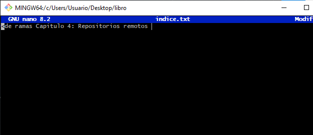
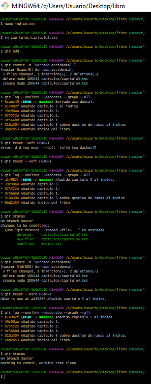
Ejercicios de gestión de ramas
Ejercicio 1
Se crea la rama bibliografía y se muestran las ramas existentes.
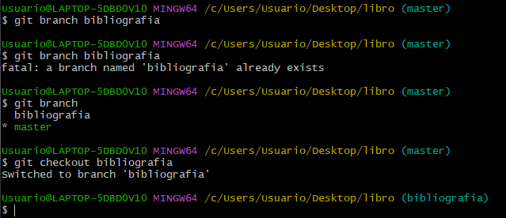
Ejercicio 2
Se crea el fichero capitulo4.txt con la información de debajo y se sube a la zona de intercambio temporal haciendo el commit y mostrando el historial.
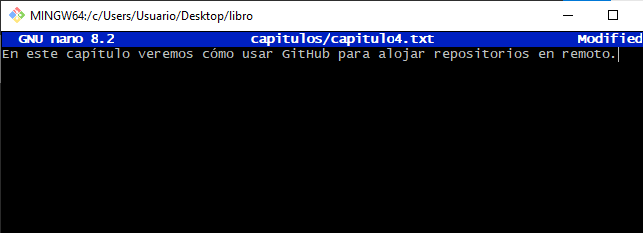
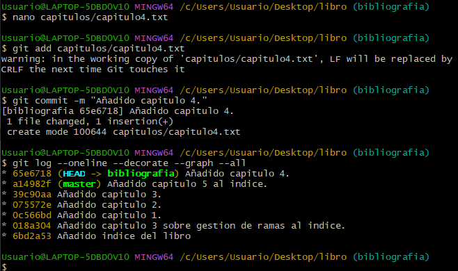
Ejercicio 3
Se cambia a la rama creada antes y se crea el fichero bibliografía.txt con la información de debajo y se sube haciendo el commit y mostrando el historial.
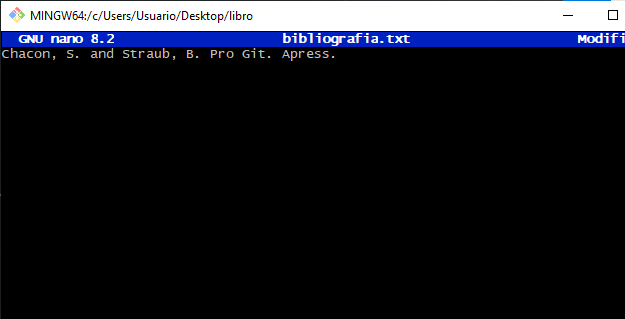
Ejercicio 4
Se fusiona con la rama master, luego se muestra el historial, se elimina la rama bibliografía y se muestra el historial de nuevo.
Ejercicio 5
Se crea la rama bibliografía y se cambia modificando el fichero como en la segunda imagen de debajo, se añaden los cambios con el commit y se cambia a la rama master donde se modifica el mismo fichero como en la tercera imagen. Por último se fusionan las ramas y se modifica el conflicto como en la cuarta imagen y se sube haciendo el commit y mostrando el historial por último.
Ejercicios de repositorios remotos
Ejercicio 1
Se crea el nuevo repositorio en GitHub.
Se clona el repositorio en libro.
Ejercicio 2
Se sube todo lo de libro haciendo el commit y se comprueba que está subido.
Ejercicio 3
Se clona otro repositorio y se sube este fichero con el nombre y correo del autor.
Ejercicio 4
Por último se hace una bifurcación en fork, se clona luego creando la rama auditoria y activandola y modificando el fichero de autores con el nombre para finalmente subirlo todo con el commit.